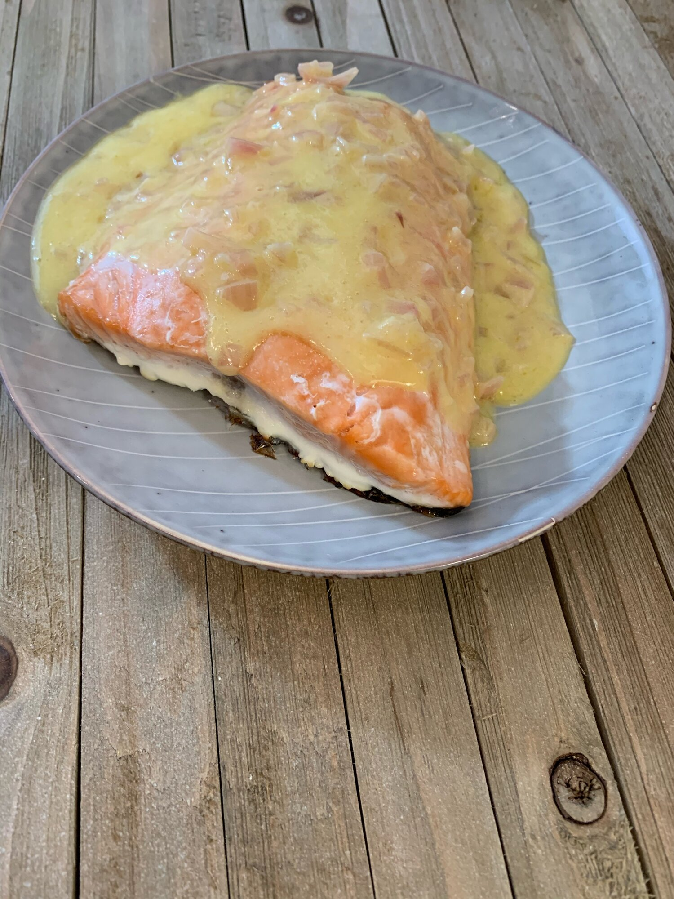

Salmon with Beurre Blanc

Description
This delectible dish is baked salmon with a creamy and buttery sauce featured in the Ghibli film Porco Rosso!
Ingredients
- 1 salmon seasoned as you please
- 3 shallots
- 2 250g sticks softened salted butter
- 250 ml dry white wine
Instructions
- Preheat the oven to 375 F
- Take a pot and fill it about a quarter with water
- Set this on the stove to start boiling
- Chop the shallots as small as you can without mincing
- Take a pan and add the white wine and shallots on medium heat
- This will sit and reduce. You will want the wine to go down to about 2 tablespoons worth. This will be maybe 10 minutes
- While that's going on take your salmon and season. I used a tray, added about 2 tablespoons of olive oil, set the salmon on that and then added garlic salt and lemon juice for flavor.
- Cover the salmon and add to the oven for 15 minutes
- Take the butter and slice it into mini patties like you would get at a family-style restaurant
- When the shallot wine mix has reduced enough, add a glass or non-wimpy bowl to top of the boiling water to create a double boiler. Add the shallot and wine mix to this.
- Add the butter patties one at a time and whisk until it melts before adding the next
- You can add a couple at a time, just keep adding until it's all mixed in
- Keep this warm while the salmon cooks
- After the 15 minutes uncover and cook for another 15. Internal temp should be 145 F
- Pour the sauce on your finished salmon